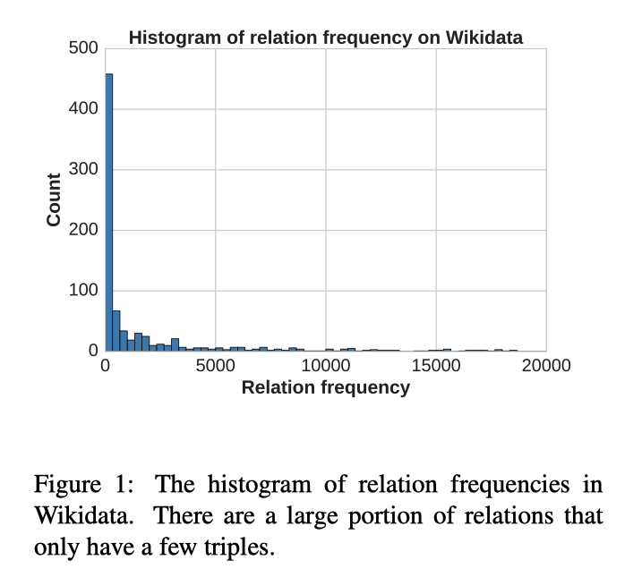
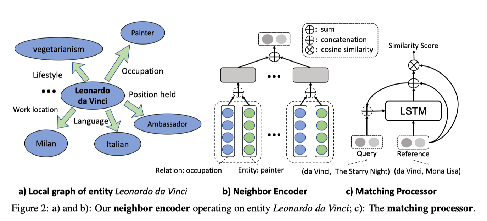
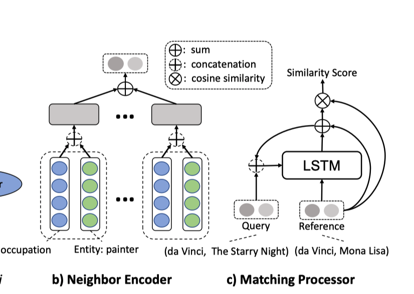
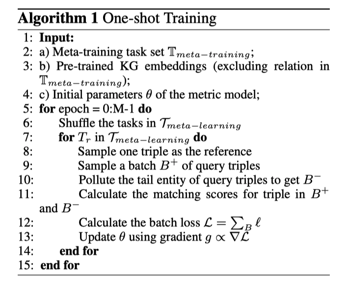
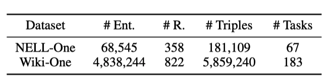
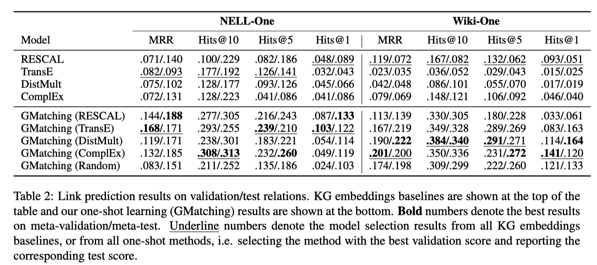
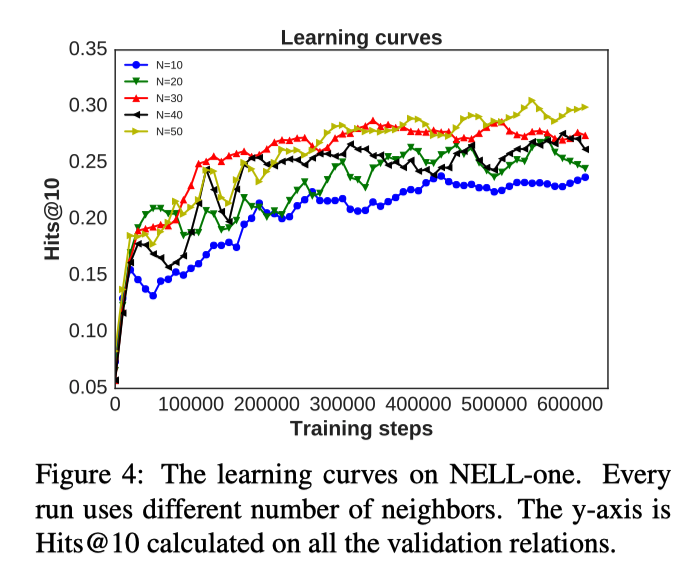

GMatching:一种小样本知识图谱补全框架
本文最后更新于：1 年前
先导
问题
知识图谱数据集往往呈长尾形态，很多关系只有几个三元组样本支撑。目前的知识图谱构建模型主要有两个问题：1.模型对于样本充足的关系和稀疏的长尾关系都同等对待，对样本量少的关系分类效果不好2.在关系表示层面，目前的模型对于新增关系无法进行预测。
为了预测目标关系，以前的方法通常依赖于对这些关系的充分学习后的表示（representation）。 在动态场景中，给定的训练实例很少，就无法对新关系的表示进行足够的训练，因此，对于当前模型，适应新关系的能力也受到限制。

针对这些问题，本文提出了一种one-shot知识谱图关系学习框架，利用embedding-based的方法学习匹配度量函数，在新增关系或者长尾关系只有非常少量的训练数据的前提下也可以进行很好的预测，同时取得了不错的效果。
贡献
- 针对长尾关系的预测任务，转化为few-shot任务进行预测；
- 提出了一种应用于关系预测的one-shot learning框架GMatching，模型只依赖于实体embedding和图谱结构，学习匹配度量函数，利用预测三元组与参考三元组的相似度对新增关系进行预测，相比其他基于embedding的模型取得了更好地效果；
- 针对one-shot知识图谱补全任务，提出了2个不同量级的数据集。
Background
One-shot Learning Settings
根据标准one-shot学习的设置，文章假设获取了training tasks。每个training tasks 都对应一个KG relation $r ∈ \mathcal{R}$, 并拥有training/testing triples: $\left\{D_{r}^{t r a i n}, D_{r}^{t e s t}\right\}$。这一tasks set就是 the meta-training set, $\large \mathbb{T}_{\text {meta}-\text {train}}$
根据one-shot的任务设定，在每个中，采用一个三元组$\left(h_{0}, r,t_{0}\right)$。$D_{r}^{\text {test}}=\left\{\left(h_{i}, r, t_{i}, \mathcal{C}_{h_{i}, r}\right)\right\}$, 其中候选尾节点$\mathcal{C_{h_i,r}}=\{t_{ij}\}$是在知识图谱$\mathcal{G}$中的实体集。给定test query$\left(h_{i}, r\right)$和 $D_{r}^{t r a i n}$中the labeled triple，可对the candidate set $\mathcal{C}_{h_{i}, r}$进行排列用来测试模型(metric model)。
The meta-training 的目标:
$T_r$是meta-training set $\mathbb{T}_{\text { meta -train }}$, $\left|D_{r}^{t e s t}\right|$表示$D_{r}^{t e s t}$中的元组的个数。
$\ell_{\theta}(h_i,r,t_i|\mathcal{C}_{h_{i}, r})$表示 an arbitrary ranking-loss function, $\theta$表示模型的参数。
Loss function 表明在只从$D_{r}^{t r a i n}$中采样one-shot数据的条件下，衡量模型在$\left(h_{i}, r, t_{i}, \mathcal{C}_{h_{i}, r}\right)$上的性能。
训练完成后，就可以利用模型来预测新的关系$r^{\prime} \in \mathcal{R}^{\prime}$，这也就是 meta-testing。这些meta-testing relation 是meta-training中未出现的，即$\mathcal{R}^{\prime} \cap \mathcal{R}=\phi$,每一个meta-testing relation $r^{\prime}$ 也有one-shot training data $D_{r^{\prime}}^{t r a i n}$ 和testing data $D_{r^{\prime}}^{t e s t}$，其定义方式与meta-training一样。这些meta-testing relation形成了meta-test set $\mathbb{T}_{\text {meta}-\text {test}}$。
文章还从 $\mathbb{T}_{\text { meta -train }}$中留出一小部分关系子集作为。构造验证集是为了不违反one-shot的假设。
最终，该方法获取了一个 background knowledge graph $\mathcal{G}^{\prime}$, 它是$\mathcal{G}$的一个子集，包含了除$\mathbb{T}_{\text { meta -train }}$、$\mathbb{T}_{\text { meta- validation }}$和$\mathbb{T}_{\text {meta}-\text {test}}$以外的所有关系。
本文主要是针对已知head entity和relation, 对tail entity进行补全的链路预测任务。
模型

Neighbor Encoder
Neighbor Encoder的目标是学习三元组的实体向量表示。旨在增强每个实体在知识图谱中局部连接的表示。对于一个目标三元组中的实体Leonardo da Vinci，它的one-hop neighbors如2(a) 所示，每个neighbor都是以元组的形式出现, 以第k个neighbor为例$（r_k, e_k）$，由于他们出现在background KG中，所以已知他们的KG embedding为：
Dropout方法？对于第k个元组之间的关系表示，即和neighbor之间的向量表示，本文采用了一个前馈网络：
$C_{r_k,e_k}$就是关系-实体对$（r_k, e_k）$的特征表示，$W_c\in R^{d\times 2d}$和$b_c\in R^d$是需要学习的参数，$\oplus$是连接操作。
最后用所有neighbor的向量表示的平均向量来表示目标实体，即图中的Leonard da Vinci:
本文中我们设置激活函数为tanh，因为他在$\mathbb{T}_{meta-validation}$中取得了最好的表现。
Matching Processor
提取在neighbor encoder里生成的任意两对实体的向量表示，然后在两个实体对之间执行多步(multi-step)匹配，最后输出一个相似度得分。
首先选择一个依赖实体对(reference entity pair)，和一个询问实体对(query entity pair)，用上述方法编码，再拼接:
本文之前使用了cosine similarity度量函数，发现效果不好，作者就使用了LSTM-based Matching Processor来进行多步匹配。其中每一个过程步可以定义为:

其中，$L S T M ( x , [ h , c ] )$ 是一个具有输入为 $\mathcal{x}$、隐态 $\mathcal{h}$ 和单元态$\mathcal{c}$的标准LSTM。$s=f\left(\mathcal{N}_{h_{0}}\right) \oplus f\left(\mathcal{N}_{t_{0}}\right), q=f\left(\mathcal{N}_{h_{i}}\right) \oplus f\left(\mathcal{N}_{t_{i j}}\right)$分别是reference pair和 query pair的连接邻向量。K是一个待调的超参数，在K个step之后，采用score_k作为query enetity pair 与 support entity pair间最终相似度评分。
Loss Function and Training
对于一个query relation r 及其reference/training triple $\left(h_{0}, r, t_{0}\right)$, 本文收集了positive(true)query triplet $\left\{\left(h_{i}, r, t_{i}^{+}\right) |\left(h_{i}, r, t_{i}^{+}\right) \in \mathcal{G}\right\}$并通过填充尾部实体的方式构建了negative（false) query triplet { $\left\{\left(h_{i}, r, t_{i}^{-}\right) |\left(h_{i}, r, t_{i}^{-}\right) \notin \mathcal{G}\right\}$。于是模型可通过下式进行优化。
其中，$\operatorname{score} _{\theta}^{+}$和 $\operatorname{score}_{\theta}^{-}$ 是利用metric model 比较the query triple$\left(h_{i}, r, t_{i}^{+} / t_{i}^{-}\right)$与 the reference triple$\left(h_{0}, r, t_{0}\right)$得到的标量。$\gamma$是一个待调的超参数。
在每次训练中，我们首先从meta-training set $\mathbb{T}_{meta-training}$中提出一个任务/关系 $T_r$, 然后在$T_r$里所有的已知三元组中，提取一个三元组作为reference/training 三元组$D_r^{train}$，提取另一批其他的三元组作为positive query/test 三元组 $D_r^{test}$.

实验


作者在本节对比了本文所提出的one-shot框架与KG embedding方法进行了对比实验。其中Baselines采用了监督学习方法，在训练过程中给测试关系一个标注样本，这样就可以学习到测试关系的表达并对其在测试阶段进行预测。对于作者提出的方法，分别采用了不同的KG embedding方法训练background KG中的实体和关系的向量表达，作为Neighbor Encoder的输入。从结果可以看出，本文提出的方法有着非常明显的优势。而且作者在Table 2的最后一行给出了仅提供Neighbor Encoder随机初始化的输入的情况下的表现，可见依旧取得了相对于Baselines的明显的提升。
Neighbor Encoder分析
作者分析了在Neighbor Encoder中，采用的neighbors的数量阈值对实验结果的影响。由图可见，neighbors的数量越大，效果也有所提升，但效果的提升也逐渐趋于缓和。所以最终作者采用50作为neighbor的数量阈值。

本博客所有文章除特别声明外，均采用 CC BY-SA 4.0 协议 ，转载请注明出处！